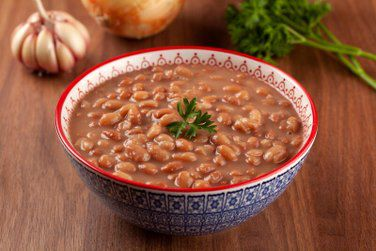

Comidas tipicas

pudim

feijão

açai
A culinária do Brasil é fruto de uma mistura de ingredientes europeus e de povos indígenas e africanos. Muitas das técnicas de preparo e ingredientes são de origem indígena, tendo sofrido adaptações por parte dos escravos e dos portugueses. Esses últimos faziam adaptações dos seus pratos típicos, substituindo os ingredientes faltantes por correspondentes de origem local. A feijoada, prato típico do país, é um exemplo disso. Os escravos trazidos ao Brasil desde fins do século XVI, somaram à culinária nacional elementos como o azeite-de-dendê e o cuscuz. As levas de imigrantes recebidas pelo país entre os séculos XIX e XX, vindos em grande número da Europa, trouxeram algumas novidades ao cardápio nacional e concomitantemente fortaleceu o consumo de diversos ingredientes.
pudim
feijão
açai